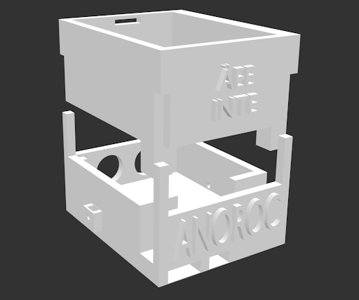
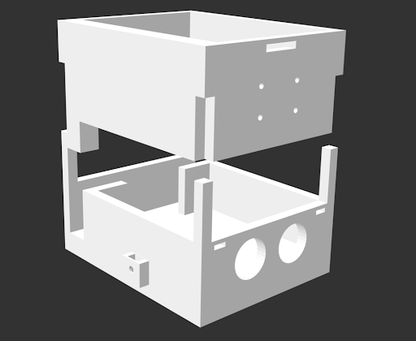
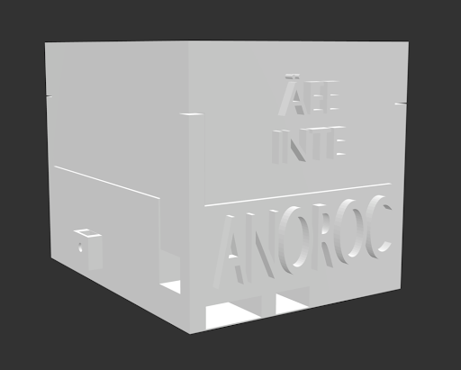
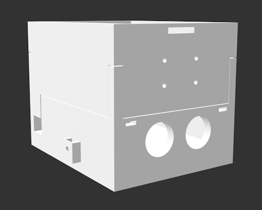

För att skapa chassit till Anoroc har 3D-moduleringsverktyget Blender används.
Det är ett oerhört kraftfullt verktyg man kan göra i princip vad som helst med.
När en 3D-modell har konstruerats kan filen sparas till en .stl fil som sedan skrivs ut med 3D-skrivare.
Nedanstående bilder visar några av modellerna till Anoroc
   